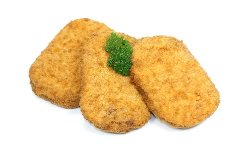
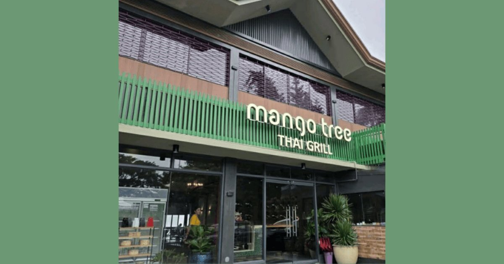

USDA cuts PH rice; DA wires ₱9.7B for El Niño
23–26 Sep 2026
USDA’s Sep 23 Grain and Feed Update (Manila Times / Philstar Sep 26) lowers Philippine milled rice for MY 2026/27 to 12.25 MMT from roughly 12.36–12.4 MMT, and harvested area to 4.65 million hectares. Drivers: moderate-to-strong El Niño plus elevated fertilizer costs that clipped May–June plantings; August–September reservoir recovery helps the November–December dry-season plant but arrived after the wet-season window. Import forecast sits near 5.20 MMT; Philstar separately flags a 2027 trade-year path up to 5.7 MMT. BPI shows 3.89–3.9 MMT already in as of Sep 17 — ahead of 2025’s full-year 3.4 MMT. DA will not freeze imports. Parallel track: DA earmarks ₱9.7B under UPLIFT — ₱6.2B SARO live for biofertilizer and fuel aid (farmers, fisherfolk, PAFF, agri-transport), ₱3.5B solar irrigation still awaiting DBM clearance for Q4. PAGASA: very strong El Niño from October, intensify into H1 2027; last 2024 episode cost agri ₱15.3B. Bantay Presyo Sep 25: special ₱60, premium ₱55, well-milled ₱48, regular-milled ₱45. Operator read for Calamba: yesterday’s PSA retail near ₱50 was the kitchen print; this week is the forward book — import pad + drought money before the dry shock. Lock rice terms now, float veg, and treat “local harvest saves the plate” as a hope, not a PO.
Open Philstar / USDA · Open Philstar / DA ₱9.7B · Open Manila Times

Poultry money moves to cut-ups and RT heat
22 Sep 2026 (USDA FAS); plant CapEx Jun–Jul 2026
A USDA FAS Philippines read summarized Sep 22 (The Poultry Site): integrators are pivoting from volume birds to processed SKUs. One vertically integrated operator with meat shops booked ~41–44% margins in 2025 on cut-ups, marinades, breakfast, and ready-to-heat lines versus ~33% on fresh whole chicken; retail doors also hedge when live prices crash. CapEx proof: Bounty Fresh (Jun 25) commits ~₱800M to a new convenience-food plant in Concepcion, Tarlac beside its dressing facility — construction 2026, equipment late 2027, commercial 2028 — targeting more than a fourfold lift in value-add capacity now centered on Metro Manila, plus budget brand Pipoy (nuggets, burger patties). Local echo: Art Fresh Chicken’s San Pablo, Laguna dressing/processing/warehouse (inaugurated Jul 11) handles >14 MT and ~400 jobs on the south Luzon belt. Operator read: this is your commissary thesis in chicken form — freeze labor and portion control into the bag so wet-market spikes don’t rewrite every plate. For a Calamba opener, source cut-ups/marinades on contract where you can; don’t build a menu that needs a perfect whole-bird farmgate every Monday. Tarlac is the 2028 national capacity bet; San Pablo is already a cold-chain neighbor.
Open Poultry Site / USDA FAS · Open Context / Bounty Fresh

Mango Tree Thai Grill lands on Tagaytay ridge
23 Sep 2026
Mango Tree Group’s newest PH concept, Mango Tree Thai Grill, opened along General Emilio Aguinaldo Highway in Maharlika East, Tagaytay — across Petron, beside The Lake Hotel — pitching Bangkok street-grill energy with Taal views. Format: up to 164 seats across three floors (84 / 36 / 44), walk-ins welcome, cash and cards, estimated ₱800–1,200 per person. Kitchen centerpiece is anglo (Thai clay charcoal) street skewers plus Tagaytay-only SKUs such as Crispy Morning Glory, Grilled Pompano, Tom Yum Bulalo, Sai Oua, Thai Turon, and Thai Halo-Halo; all-day Thai breakfast on weekends. Hours: 10 a.m.–9 p.m. weekdays, 7 a.m.–9 p.m. weekends (subject to change). Brand stack: founded Surawongse 1994; 45+ doors across Thailand, PH, China, HK, Macau, Japan, Singapore; PH since 2010 with 12+ stores across Flagship, Cafe, and Thai Grill. Operator read for Calamba: this is leisure ASP on the ridge, not a weekday canteen competitor. It densifies the Tagaytay weekend catchment your South Luzon guests already drive for — while Nuvali/SM Sto. Tomas still rewrite the weekday grocery and mall food court math closer to home. Don’t copy the ₱1,000 ticket; note the charcoal/grill differentiation and exclusive SKUs that justify the climb.
Open PinchLink